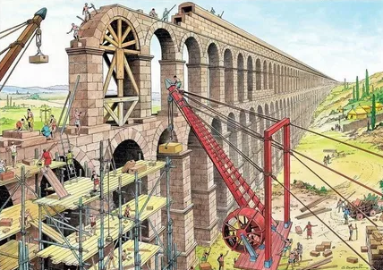
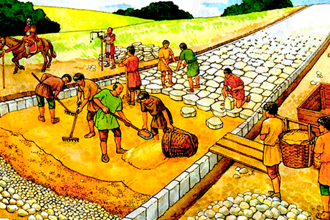

Древний мир


История технологий начинается с древних цивилизаций, где люди впервые научились создавать инструменты и использовать окружающую среду для своих нужд. Одним из самых значимых изобретений того времени стало колесо (около 3500 года до н.э.), которое произвело революцию в транспорте и строительстве. Интересно, что колесо приживалось не сразу — первые повозки были такими громоздкими, что их скорее можно было использовать как домики на колёсах, чем как транспорт!
Египтяне поражали мир своими достижениями в архитектуре, строя пирамиды с помощью простых механизмов, таких как рычаги и наклонные плоскости. Например, чтобы поднять каменные блоки весом до 80 тонн, они использовали систему полозьев и смазывали дорогу водой, чтобы уменьшить трение. Можно сказать, что это был первый «водный слайд» в истории!
Китайцы же изобрели бумагу и компас, а шумеры создали первую письменность — клинопись. Эти технологии стали основой для дальнейшего развития человечества. А знаете ли вы, что древние греки изобрели антикитерский механизм — механическое устройство, которое считается первым аналоговым компьютером? Оно использовалось для предсказания положения звёзд и планет. Представьте себе древнего астронома, который мог бы сказать: «Сегодня вечером будет отличное время для Netflix и отдыха... то есть для наблюдения за звёздами!»
Средневековье часто называют «тёмными веками», но именно в этот период произошло множество важных технологических прорывов. Развитие сельского хозяйства, металлургии и строительства позволило людям улучшить качество жизни.
Одним из ключевых изобретений стало водяное колесо , которое использовалось для переработки зерна, производства тканей и даже для подъёма воды. Это был настоящий «вечный двигатель» того времени! Также появились первые очки, которые помогли людям с плохим зрением. Представьте, как сложно было раньше читать книги без очков — наверное, все герои средневековых романов просто щурились и надеялись на лучшее.
В это время активно развивались военные технологии: были созданы катапульты, требушеты и другие осадные машины. Знаете ли вы, что средневековые инженеры иногда запускали в осаждённые города не только камни, но и... тухлые яйца или даже трупы животных? Это был своего рода «биологический удар» до появления биологического оружия.
Интересный факт: в Средние века появились первые механические часы, которые позволяли более точно измерять время. До этого люди ориентировались по солнцу или песочным часам. Говорят, что если бы тогда существовали будильники, то они бы будили людей не звуком, а запахом свежеиспечённого хлеба!
XVIII–XIX века стали временем невероятных изменений благодаря промышленной революции . Этот период ознаменовал переход от ручного труда к машинному производству. Первым важным шагом стало изобретение парового двигателя Джеймсом Уаттом, которое положило начало развитию фабрик, железных дорог и кораблей. Также в этот период появились:
Индустриальная революция не только повысила производительность, но и привела к массовой урбанизации, когда люди начали переезжать из деревень в города. Представьте, каково было жителям деревень, когда они увидели первый паровоз: «Это что, дракон на колёсах?» Интересный факт: первая железная дорога, построенная в Англии в 1825 году, соединила города Стоктон и Дарлингтон и положила начало эпохе железнодорожного транспорта. Говорят, что первые пассажиры боялись ехать слишком быстро — ведь скорость 30 км/ч казалась им просто космической!
XX–XXI века стали временем стремительного развития технологий, которые изменили нашу жизнь до неузнаваемости. Появление компьютеров , интернета и смартфонов сделало информацию доступной каждому человеку в любой точке мира. Ключевые достижения современности:
Сегодня мы живём в мире, где технологии развиваются с невероятной скоростью. Учёные работают над созданием квантовых компьютеров, роботов и даже технологий для колонизации других планет. Представьте, как здорово будет, если однажды мы сможем заказывать пиццу прямо на Марс!
Интересный факт: первое сообщение в интернете было отправлено в 1969 году. Оно состояло всего из двух букв: «LO» (предполагалось, что это будет слово «LOGIN»). Если бы это было сегодня, мы бы назвали это «первой ошибкой 404».
Заключение
История технологий — это история человечества. От простых каменных орудий до сложных
космических аппаратов — каждый шаг в развитии технологий делал нашу жизнь лучше,
удобнее и интереснее. Сегодня мы стоим на пороге новых открытий, и кто знает, какие изобретения
ждут нас в будущем? Возможно, однажды мы сможем путешествовать во времени и лично поблагодарить
изобретателя колеса за то, что он избавил нас от необходимости носить вещи на спине.
А пока давайте наслаждаться тем, что у нас есть: интернетом, смартфонами и возможностью заказывать еду одним кликом. Согласитесь, это гораздо удобнее, чем охотиться на мамонтов!